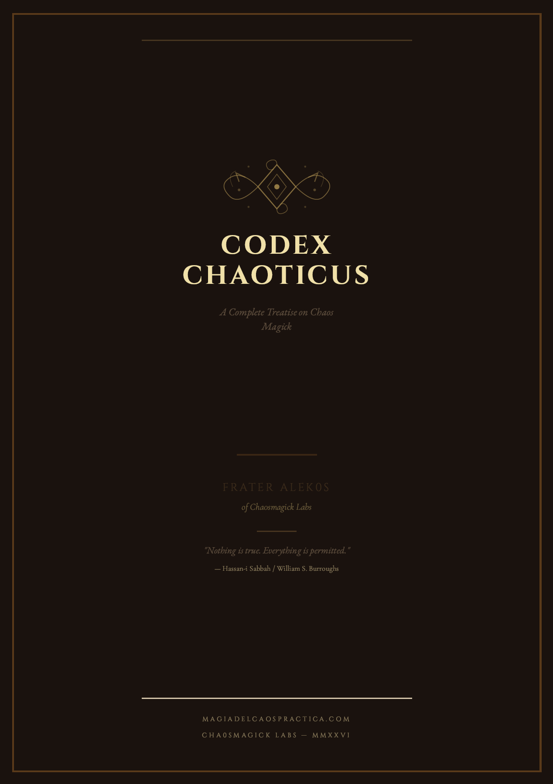
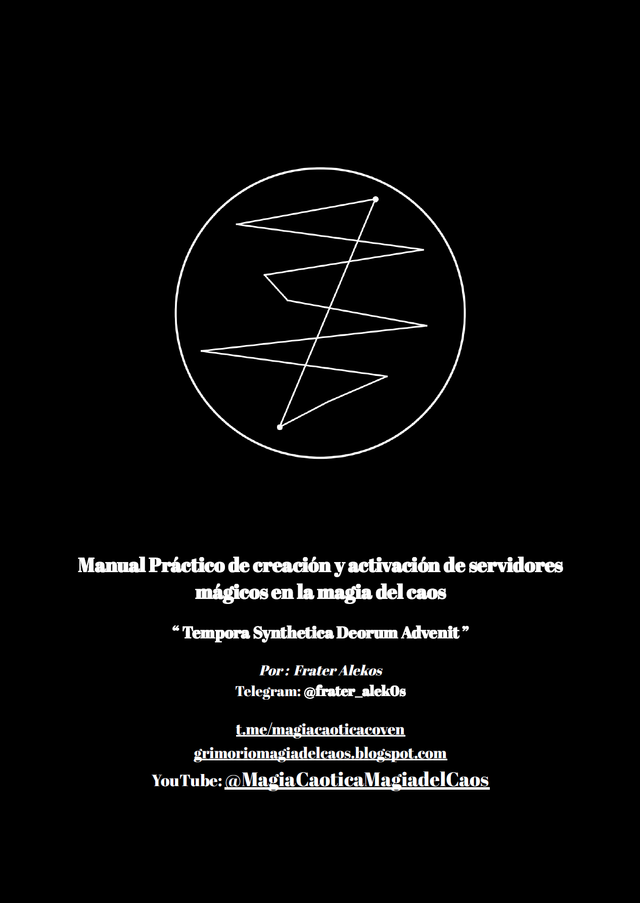

Tarot Chaos: Magia del Caos Aplicada al Tarot
Domina el Tarot desde la perspectiva de la Magia del Caos. Un grimorio digital que fusiona los arcanos con sigilos, gnosis y servidores mágicos.
 ES
ES
Tarot Chaos: El Grimorio Digital de Magia del Caos para el Tarot
El Tarot no es solo un oráculo — es un sistema de poder. En Tarot Chaos, Frater Alek0s revela cómo transformar las 78 cartas del Tarot Rider-Waite en un motor de manifestación caótica, utilizando los principios de la Magia del Caos: gnosis, sigilización, servidores y cambio de paradigma.
Este grimorio digital te enseña a dejar atrás las interpretaciones pasivas y convertir cada carta en una herramienta activa de cambio. No se trata de predecir el futuro — se trata de crearlo.
🔥 ¿Qué hace único este libro?
- Tarot como Tecnología de Gnosis: Aprende a usar las imágenes arquetípicas del Tarot como portales de gnosis para cargar sigilos, comunicarte con servidores y alterar tu conciencia a voluntad.
- 22 Arcanos Mayores como Herramientas de Poder: Cada arcano mayor es desglosado no como "significado", sino como una tecnología del caos — un paradigma que puedes adoptar, un sigilo que puedes cargar, una entidad que puedes invocar.
- Sigilización con el Tarot: Métodos avanzados para combinar cartas del tarot con técnicas de sigilización de Austin Osman Spare. Crea sigilos compuestos usando los arcanos como alfabeto del deseo.
- Servidores Arquetípicos: Crea servidores mágicos basados en arquetipos del tarot. El Mago, la Suma Sacerdotisa, la Emperatriz — conviértelos en entidades operativas para tu trabajo mágico.
- Tiradas Caóticas: Sistemas de tirada no lineales diseñados específicamente para la Magia del Caos. Olvida la Cruz Celta — aquí encontrarás La Espiral, El Caos Primordial y la Tirada del Vacío.
- Correspondencias Caóticas: Tablas que vinculan cada carta con planetas, elementos, metales, runas y estados de gnosis para un trabajo mágico preciso.
📖 Contenido del Grimorio
- Introducción: El Tarot como sistema operativo mágico
- Capítulo 1: Gnosis y Tarot — El estado de conciencia que potencia la lectura
- Capítulo 2: Los 22 Arcanos Mayores como Tecnologías del Caos
- Capítulo 3: Los 56 Arcanos Menores — Herramientas de manifestación cotidiana
- Capítulo 4: Sigilización Avanzada con el Tarot
- Capítulo 5: Creación de Servidores Arquetípicos
- Capítulo 6: Tiradas Caóticas y Sistemas No Lineales
- Capítulo 7: El Tarot como Herramienta de Cambio de Paradigma
- Apéndice: Tablas de Correspondencias Caóticas
📌 Formato
- Formato: PDF profesional — descarga instantánea después de la compra.
- Diseño: Oscuro y atmosférico con portada de arte sigilar.
- Características: Índice interactivo con hipervínculos, tablas de correspondencias detalladas.
- Idioma: Español.
- Acceso: 100% offline — lee en cualquier dispositivo. Sin suscripciones. Sin DRM. Acceso de por vida.
🎯 ¿Para quién es este libro?
- ✓ Practicantes de Magia del Caos (principiantes a avanzados)
- ✓ Lectores de tarot que buscan un enfoque más activo y transformador
- ✓ Tecnomantes y cybermantes
- ✓ Creadores de sigilos y servidores
- ✓ Cualquier persona interesada en el tarot como tecnología de la conciencia
⚡ Beneficios
- Aprende a usar el tarot como herramienta de gnosis y no solo de adivinación
- Domina la sigilización con los arcanos del tarot
- Crea servidores arquetípicos basados en las cartas
- Integra el tarot en tu práctica de Magia del Caos
- Descarga instantánea | 100% offline | Sin suscripciones
"Nada es verdad. Todo está permitido."
Compra única. Acceso de por vida. Descarga instantánea.
You May Also Like

CODEX CHAOTICUS: Complete Treatise on Chaos Magick
The most comprehensive digital grimoire ever written on Chaos Magick. 27,000+ words, 15 APA tables, 5 sigil methods, servitor creation, and more.

Magical Servitors Manual
Learn how to create and activate magical servitors with Chaos Magick. Practical guide by Frater Alekos.

Ouija Cazadora: Chaos Magic Guide
A profound exploration of psychic technology designed to transform the Ouija board into a high-precision ritual instrument.